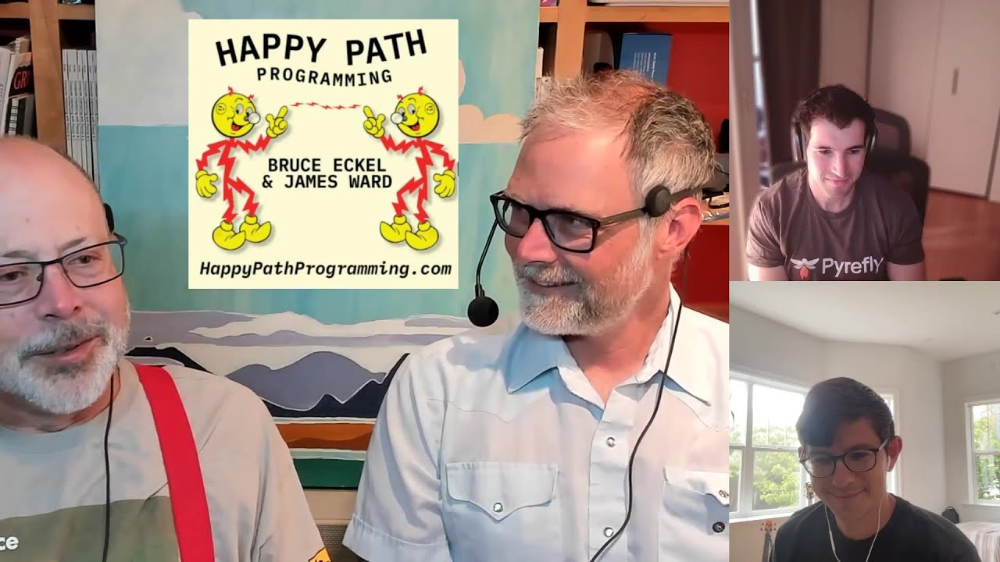

More Python Type Checking! Pyrefly with Aaron Pollack & Steven Troxler

About this episode
Excitement around Python type checking continues to grow and the tools continue to evolve. We chat with Aaron Pollack and Steven Troxler about Pyrefly - a Rust-based Python type checker and IDE extension. We also touch on the adoption and sentiment around types in Python's ecosystem.
Resources & links
Transcript
Generated automatically by Spotify, so expect the odd misheard word. Select a timestamp to play from there. Download (.srt)
Read the transcript
0:01 Welcome to Happy Path Programming. I'm Bruce Eckel. I'm James Ward, welcome to your Happy Path programming. It's just a beautiful day in Crested. Beauty and it's. Rain. August 1st, yeah. August 1st, yeah. In 2025, yeah. We should put the dates on these things. We saw a. Beautiful rainbow last night. Yes, we did. Glad to have some rain, yes? We had book night last night. Yeah, we were trying to figure out all the weird things about TypeScript and Oh my gosh, I don't know if either of you have encountered that language before, but it is. AI want to call it a Mind F but it is kind of anyway. It comes with some baggage, yeah. That's probably a better way to do it. Yeah. We should interview and or sometime and just get find out what's going on. So the summer Tech Forum is coming up and it's September, September 8th, the week of September 8th. And if you go to summertechforum.com, you'll find the details.
1:04 We, we have a, we have students coming. We have, we have some people haven't been here for quite a while. Bill Venners of Scala fame is threatening to show up, and did. You know what I'll be working on and talking about at Summer Tech Farm? No. What will you be working? On AI of course. Oh yeah? Well, that's the CP. That's the theme of the conference. Oh great. And I said AI, obviously. Building some agents but and. But of course the the conference theme doesn't limit us to anything. We don't have to talk about AI at all, but that's what it says so makes it easier to sell to your. Mail. So if you're interested in AI, great, If you're not, great. Yep, Yep, it's all it's all good. OK, so yes, this week we are talking to Aaron Pollack and Steven Troxler from Meta. Who are the their their focus is I think your focus is types in Python.
2:01 Is it? Am I? So we're doing another one on on Python types. It just happened that way, probably because I was at the Python conference and at the typing summit. And so it's just, it's just ended up that way. And we're interested in types you want to talk. Well, and I've certainly enjoyed. I've been writing a lot of Python like I do, yeah. And the types make my life so much better so. They do. They do, but apparently not everybody's on board with it. Yeah. So, Eric? Yeah, but we love to hear that. Yeah. Hello. Yeah. Thanks for having us. Yeah, and anything. To say about your background, what you work on or anything you want to introduce yourself with. Well, as you say, we, we are from the team that kind of focuses on types in Python, I guess more properly, we're the team that focuses on the IDE and CI experience, CI and so much as it's related to static typing. So we build the type checker, we try to make sure that it integrates with the editor, and we also kind of work with users to help get types to the level of adoption that they want for depending on what kind of system they're working on, and sometimes see if we can add types to older code bases that may not have types.
3:26 That's kind of what our team generally focuses on. When did meta start adopting types? Meta OK, well so this this will get into the history of the team very quickly. So types came out. I actually don't remember the exact year, but it was something like 2013 or 14. I think Pep 484 and my π came into existence. You actually, you recently had Carl Meyer from Ty on and he spoke a little bit about this Instagram experimented with typing with my pie a little bit pretty early, I think about 2016 or 17.
4:12 But our team, the origins of our team are actually in the security org because there's a history of doing taint analysis to try to track the flow of data that is not controlled by our company into any sensitive system. We've got open source tools that do this in a few languages. And Pyre, which is our older type checker, was originally conceived as mostly a tool to do that. It had enough type inference to be able to analyze method calls, because if you don't know the types of things, you can't figure out what functions being called when you're trying. To do this types in Python. No, this was after my PIE, so after PEP 484, after it was understood what the syntax would be. It was pretty early.
5:04 The project started in I think 2016. Or 17 somewhere around there. And it was open sourced in 2018. OK, and that was Ocaml, right? You wrote that in Ocaml. Yes, that was Ocaml. OK. And what was the motivation? I mean was it just, did it run slow or something? What was the motivation to move from? Cuz I've heard Ocaml is like the Cadillac for writing compilers, it makes it a lot easier or something. But what was this? It's in Russ now, right? So Ocaml was pretty well used by the type checkers. If you've heard of Hack, which is like PHP with types, that team kind of pioneered the use of Ocaml with type checkers. And then Flow, which is our version of TypeScript, also did that.
5:59 So a lot of expertise in building type checkers was in that language. And so that's kind of what inspired us to start with that. Then Fast forward to 2024, the end of last year, we knew we wanted to basically do a ground up rewrite. So we had the opportunity to pick a new language and I, I can let Steven get into more of the specifics on that, but that's where we decided to go with Rust. That's fascinating, though, the, the, the origins in some ways of, of Pyre, pyre, original Pyre and then power fly. So Pyre was what came out of kind of the same ethos as hack and flow, which which would make sense. Let's add types everywhere to all the languages. And so you had some teams doing that for for JavaScript and for PHP and so doing it for Python that that's cool. Type all the things.
6:58 Yeah. And so, so then what was it a year or so ago, the rewrite into Rust began and it and then that's called Pyrfly. Is that how that works? That's correct. So yeah, Pyr had reached a point where so it's the only type checker that can scale to Instagram now. Pyrfly can, but it started out as a batch processor and there were just design decisions that if you can rebuild it again, that you'd want to make. I think the other big motivator was we knew we wanted to have a first class IDE experience and you really have to be very deliberate about the design of your type checker in order to do that. And so these are some principles that we went into, aside from choosing a new language and getting to basically start from scratch.
7:47 So you were able to bring all the learning that you had from creating Pyre to to build this? Yeah. And in some ways new requirements like. So it sounds like maybe Pyre didn't have an LSP or or doesn't and. So Pyre does have an LSP. The challenge with it is that the architecture was oriented around doing a series of map reduces. It is incremental so it doesn't do a full recheck. That would be unusable, yeah. But the map reduces are still, that's a fairly slow way of doing updates. And it went through many passes of map reduces, which kind of minimized the amount of work it did, but also led to a lot of latency because you're waiting for the slowest element of each phase. And a lot of the reason why it had that structure, some of it is that it originated in this kind of static analysis framework where MapReduce for very long running processes makes a lot of sense.
8:51 And some of it's the limitations of the versions of Ocaml that we were running on. We needed to parallelize. And Ocaml, like Python, had effectively a global interpreter lock. I mean, it doesn't have an interpreter, but the runtime until very recently didn't allow native threading. That has actually changed with Ocaml 5, but we're kind of locked into a an architecture on Pyre and a way of using the library ecosystem that predates Ocaml 5 and threads. And that affected a lot of the decisions we made. Whereas Rust has always been, you know, threads have always been native. There was no pull toward that sort of architecture.
9:36 And that has made it easier to get good latency as well as throughput. But for the. IE no Rust already or did did you come up the learning curve on that? How was that for you?
9:53 There's some learning curve, so Oak, Hamel and Rust are similar in some ways. Rust, you have to deal with a lot more details around ownership and memory layout, and there's definitely a learning curve there. The biggest thing we've had is a Rust expert helping us, so Neil Mitchell, who has worked a lot on build systems, including Buck, which is our primary build system, and it's very similar to Basil for people who are familiar with that. It's written in Rust, a very large REST project, and Neil spent years working on that. He knows a great deal. He's helped our team a lot because he helped bootstrap this project. And then coming from O Camel, other than things like borrowing and you know details of memory layout, the rest of the REST type system is fairly familiar.
10:48 That's interesting to hear that that the path from Ocaml to Rust is is pretty smooth. Rust is surprisingly sophisticated for a low level. I mean, you know, it's not really low level except that you can twiddle bits, you know. But but really, when you look at what you're able to do with Rust, it's a pretty brilliant design. Yeah, you know. It's there. There are some ties between them because the early versions of the REST compiler were actually in O Camel, so the people who developed the REST were at least informed by their knowledge of O Camel. There's some like root language model. What is it the ML like family of like they both kind of come out of the ML family or?
11:34 Something there's a yeah, there's a name, Hindley Milner type system, I guess something like that. Is that right? Yes, the family includes Ocaml. FML. Some newer languages that I think I've heard you talk about. Unison is kind of in that family, and also Haskell. Rust is actually more like Haskell than Ocaml, because Rust traits behave closer to Haskell type classes, but they're still all very related. And I think Neil had worked on Haskell too. Yes, he's at least a primary maintainer, if not the author of The Maine Haskell Linter. There were definitely some conversations late last year. We were like, all right, or are we our best team now and especially coming from O Campbell? But you can.
12:27 I'm curious for your take, Steven, But I feel like people have actually started to really enjoy it. Yes, I think so. The the toughest thing about Rust really is probably there is some learning curve, but I don't feel like that's been a huge problem. If anything, the compile times are maybe the biggest downside. I think they're worth it because you get so much context from having a very powerful type system. As you're writing code, you don't need to run it quite as often. There is a noticeable delay sometimes between I finished writing the code and the test runs, and that to me is the biggest downside. I noted that you brought up Rock moving to Zig, and I think they were motivated by that, but their system is larger than I think ours ever will be. Yeah, yeah, they're doing a lot more than the test checker. Yeah, interesting.
13:27 Do you is this is a total tangent, but is the Rust compiler written in Rust? Is it self hosted wonder? It is today, yes. The early versions were in Oak Camel, but it's been bootstrapped for many years. Which makes a lot of sense. Yeah, Yeah, so, so. What's the current state of Pyrofly? Is it released and and people using it? Where? Where are we at with it? Yeah, so we announced the alpha right around Pycon, and it's been exciting to see like lots of people leaving issues on our GitHub, opening poll requests. It's probably still not ready to be in your CI, but the IDE is getting pretty far along. And yeah, we're having people use it and give us feedback and add features. Nice.
14:17 Yeah, my plan for my book is to test all of them, just to be able to compare them and you know. It'd be great in your build process to run them all, and I will. The differences are, yeah, absolutely. I guess that's a challenge for your book is when you have the output of a compiler, I guess would be the only place it would be surfaced. It'd be like, oh, this compiler depends on which type checker you're using. I guess not. Compiler. No, I don't. Yeah, it's the type checker. It's all, yeah, it's all upfront. But yeah, Speaking of which, we mentioned before we got started, it's like I thought there were four type checkers and you Steven said, oh, there's more than that. So can you tell me what the other ones are that I don't know about and? Honestly, I probably can't list them all because there are more experimental ones than I even know of.
15:09 So the the the original type checker, and certainly one of the most important to be aware of right now is my pie, which is that was where it began. It's written in Python And unofficially was kind of defined how the type system would work just by being the original implementation for a while until we evolved how the community thinks about things. My PIE was very important just because it got started with typing at all. I think many of the early other type checkers came out of the need to find a more performant type checker for very large code bases because Python we had again the Global Interpreter Lock and it's not a particularly fast language, single threaded. And when you put those two limitations together, my π worked very, very well on small projects and not very well on very large projects.
16:17 So the next most used type checker today is probably Pyrite, and that came out of Eric Trout, who's the author of Pyrite, was working on a team that had some moderately large Python code bases, was finding that my pie was too slow, and also he really wanted to get a first class IDE experience. My pie, similar to Pyre that we discussed was not really built for that in mind. At the beginning they added an LSP, but it wasn't super responsive. So Pyrite was really geared toward give the best IDE experience I can. And Eric came from the TypeScript team, so, you know, when he came to Python And saw what the technology was like, you know, we want a first class ID that integrates with your CI. So your hover and your types are the same. And so Pyro, it's actually written in TypeScript, which is convenient for integrating into VS Code. But yeah, that's kind of the connection. I guess I did because you have to install it using NPM. OK, huh.
17:31 That is OK And then that integrates well with VS Code. Yeah, because you don't protect the LSD, OK? Yeah, that makes sense. Good. Yeah. But it's so it's. Remarkably fast on the command line. It is quite fast and I think it speaks to the careful design. And so that's something Eric would talk a lot about is the design for the type checker matters a lot for the performance. Yeah. Yeah, exactly. OK. And then there's Ty and then any other ones to to note. So recent. Oh, sorry, yeah. Recently, I don't know if you've heard of Jedi LSP, but that used to be the Python LSP basically until Pyrite came out.
18:19 That is from a, a person named David Halter. I believe he just announced 1/3 type checker for Python based in Rust. And this one is called Zuban or Zuban LS. It's not open source and it I think the, the tagline is a drop in replacement for my π. So I think that's what he's going for and I think it's going to be paid for enterprises. So that's probably the newest 1 and I think the community is watching. Jedi was a big success and so it's exciting to see David come out with a new project. Yeah.
19:06 What are your thoughts on the crowded type checker space in the Python world? Is it's probably great to scatter a lot of seeds and see what blooms and there's a bit. Of well, and a lot of people learning about the that's how to solve the problem, which is, which is good. And most of them are open source, or I guess except for Zuban. It's called, yeah. Pronounce Zuban. I don't actually. Know Z. UBAN. Oh, I see, ZUBANI was thinking. Oh, yeah, Python without types is such a zoo. We're going to ban that. That's. I like that, Yeah. So there's there's the, the language design, the Peps, Michael Peps side of things. And then and then multiple open source projects and, and others creating the type checkers.
19:58 So there's some kind of collaboration through the the type check community, type type community or whatever it is. What was the official name for it? You said it for council. Council. Yeah, typing council and then different implementations. Most funded by large companies, or at least there's. It doesn't seem like there's. Well, my pies, isn't it just one person? So the history of these things changes over time depending on where companies focus are. Early my Π development was backed at least partially by Dropbox, although it always had a large community of developers when we got all of them worked at Dropbox. Yeah, when, when Gita was there, OK, he started my π bringing Yuka on from PhD, who did not know, I think came up with the prototype. OK, Yeah.
20:56 Let me inject a question that I that I asked last week as well, which is and. I don't know if you have any insight in this, but it seems like to me coming from Scala that Python's type system is and the syntax and everything is almost identical. I mean the pattern matching and everything looks like Scala pattern matching to me and all this. Do you have any insights on where the inspirations are from? I have some when we talk with Guido, who has not single handedly driven things but has often been a guiding force, especially in that he sponsored many of the Peps. He takes the most inspiration from TypeScript, partly I think because he thinks it's addressed a similar problem of a highly dynamic language trying to adopt types. And in that sense I think it's different than Scala, because Scala is mostly a statically typed language, so the concerns are a little different.
22:05 Syntactically, I think it might be true that we look a bit more like Scala. Some of that really has just come from the limitations in the language itself, though. For example, everything in Python typing basically uses square brackets, right? That's partly because square brackets and the runtime semantics of that were well defined from the very beginning, and it's been fairly easy to just keep using that in new places and then occasionally have to make some changes to the parser or interpreter. PEP 695, which adds better generic syntax, was a pretty big change, but I think it was still simpler using the square brackets because all the mechanisms were already there.
22:50 Adding an angle bracket would be fairly difficult because the current grammar just doesn't really leave an opening for that. And visually, someone once said to me, Python's not a pointy language, so the angles and curlies, no sharp edges. Yeah, it gets some friction. I'm completely comfortable with the square brackets, yeah. My take on terms of the actual features, I personally think that Python is a pretty complicated language if you're going to use its full power and try to type it as best you can, which there are limits to how far you can go. And to me the the fact that it feels a little similar to Scala. I think it's just partly that Scala is a very complicated language because it chose to be and Python typed.
23:38 Python is a moderately complicated language because it's trying to capture as many dynamic patterns that pre exist the type system as possible. I think of, I don't know, I've come to think of Scala as an exploration in type systems. Some of things, some things didn't work out and so Python could and other languages could kind of cherry pick and go, oh, this worked. Let's put this in. These other things didn't. Yeah, I mean it's mostly funded out of EPFL, which is a a educational. Right. Right group and yeah, Martin I think is always looking at how they solve some very challenging problems around type systems right yeah, yeah, yeah.
24:29 So I think there's, there's maybe just like a general evolution for many of these languages in the same like gravitational direction or something to sure to what they support like AD TS or a good example where it's like, yeah, most of these modern languages now have AD TS and it turns out AD TS all look kind of similar because someone like 50 years ago, you know, said what ADT should look like.
24:57 So on on the kind of adoption side of things, I'm curious to your thoughts on how is the Python community generally feeling about types and the ability to add them? Is this only for the people who really understand types or have large code bases? Or what do we see on? I don't know people that don't live in large code bases and and don't because it doesn't. Matter to me the size of program I'm creating. It helps me think about it and I know that it's more correct, so I usually. Been doing type for. Little scripts, whatever. I use them for everything. No, not for decades, but not, I mean, not like this. So like, yeah, what's your All the people I interact with are big types, fans and want everybody to use them and have struggles getting people on board. So like what?
25:59 What has your experience been with this? You know, I think the tide is turning a bit if there's something exciting about all these new type checkers. I saw this on maybe threads or some social. Someone said 2025 is the year of type checking and I was pretty delighted to see that and. You're at the Linux desktop. Oh wow, how's? Every year I think there's there is definitely something there growing where where people are like who maybe have been in dynamic languages, There's some of them that are beginning to embrace types more because the tooling has gotten better. The types are now in their language that they're using. Is is that what you're saying?
26:47 So early on and Stevens been in Python typing longer than me, so I'm curious for your take. But there's a lot of pushback to it. If you're familiar with the uncanny valley, this is something we've talked a lot about it metaphor. PHP moving to hack is at first you don't like it, it's slowing you down, it's unfamiliar, but then eventually you move past that and it it's hard to go back to an untyped language. It's hard to say if most of the communities there yet. I'm kind of skeptical. We ran the survey last year and it had a very high response rate. I think like 88% of people said they sometimes are always use types. Now granted it's possible only people who care about types took the survey, so I don't take this as a a general view of the Python population. But it does seem like people are connecting the dots between I want better auto complete and go to death in my IDE. I'm working with other people and I don't want to deal with their bugs.
27:53 So it does feel like the conversation's changing. OK. And did your survey have any data on the library adoption of types in? In my anecdotal experience, most of the Python libraries that I've interacted with seem to have good type information in them, but but I'm curious if you have any data on on the library ecosystem side of this. Not in the survey, but we made this script that runs and pulls the top like 2000 Pi Pi packages and then does an analysis to see the type coverage and then also runs pyrites I think verify types. I can send a link, it's python-type-checking.com, but the the coverage is surprisingly high.
28:47 But with some notable exceptions where some just absolutely have no type coverage, like maybe 6 or S3 transfer. Some of these packages are, you know, downloaded millions and millions of times per day, but still don't have types. The big ones like Bodo 3 or requests with type shed they get their coverage in the 60s or 70%. Nice. What was the type shed? What was it type shed? Type shed is a centralized repository of type information. There's really there's two things in it, and this is at least how I think of it. There's a type shed STD Lib. That is where that's the canonical source of truth. It's a community maintained for the standard library types. The standard library at the moment does not have types in the actual Python code, partly because a lot of it is extremely complicated and fairly dynamic code. So the typeshed Ste.
29:56 Lib has the best type information we know how to get, which in some cases involves very complicated overloads for those standard library functions. So typeshed is like the in the TypeScript world. There's definitely typed or whatever it is where people started adding the type definitions for JavaScript libraries. So there's something similar in the Python space that allows this, like external source for the type definitions. Yeah. And then there's another branch of typeshed that's community maintained stubs for libraries that for one reason or another don't want to use inline types. And those eventually get uploaded to π Pi under the name of the package dash stubs package name. So you can pull that down when you pull down the package and then the type checker will be able to see. So if I understand this right, so you can have a library and then you can have this additional stubs thing which basically provides all of the types for that library. So that way.
31:01 You don't have to, and I think there are stub generators, right? There are high right will generate stubs for instance, and there have been other I think one off packages as if there weren't enough type checkers. Now your types don't even necessarily live in the same package as your repo, and that causes other problems, right? Because you'll update your version of the package and then the version of the stubs has to match it. And there's CI jobs in typeshed that will work for that and detect when a function changed or the. Type seems like a like a stepping zone to get where we need to be, which is the libraries need to have the types in them. But. But yeah, it's an incremental process. It's an incremental process. Plus, I can see there could be some hesitation because the type system itself is still kind of evolving. I mean, it feels like it's settling, but there could still be changes.
31:57 And you could like, do your library and then maybe have to do it again. Yeah. We've actually, we've worked with a few community members who started to move their types back into their project. I think it's you, Jason Lib. I'll look that up because I want to shout them out for doing this. But if folks are interested, we have a spreadsheet and we'd love help from the community. If you want to help, move them out of type shed and put them into the package so that they can stay better In Sync. That's a fantastic effort. So thank you for helping people do that because yeah, just like if we can help people move those externalized types into their library, that's beneficial for. Everything. So on that subject, does pyrefly or or do you have a separate tool that can like insert types into your code?
32:50 You know, add automatically add types. There, there are a number of tools that exist. We are working on a Powerfly, I think it's called auto type, yeah, which is it's another command within Powerfly that will try to take the type information that Powerfly. For now, it takes whatever Powerfly already produces through type inference and adds that we may be able to add more powerful inference to it eventually. Pyre had a similar tool, Pyre Infer, that would try to do significantly more aggressive inference than the type checker would do. There are also community maintained tools that have attempted similar things.
33:37 There have been a few attempts to use machine learning to do this as well, sometimes with feedback. There are a couple experiments trying to get the newer kinds of models to do it, but also more classical machine learning even, you know, 5-10 years ago there were people trying to use just supervised learning or something like that. To. Add. To really increase the, you know, help the adoption if you don't have to, you know, struggle through if you can just check the the results rather than have to figure them out yourself. Some of this comes back to the actual, like data modeling, where if your library models data as a dictionary, you probably should create a data class or whatever instead. And so it's not always.
34:28 There's not always a good base type to to the could be inferred. It may just be a dictionary, and you should add. Types. Honestly, the the types of typing problems that are hard for the human are still the ones that are hard for the inference algorithm or LLM. Like the easy types, the basic returns can usually get done fairly easily through automation like Firefly. Auto type does a pretty good job. Monkey types been around forever, does a pretty solid job. But as you said, it's where you probably should refactor your code or you're now unioning a bunch of things together. That's where both the human and, at least for now, the computer is frustrated. Yeah, biggest, I think the biggest help that I've gotten is with, even though I've been exposed to generic since the C++ committee and it's still like some of the tricky ones. It's really helpful if you have, you know, something that can can write those things for you and then you can go, Oh yeah, I see. That's right.
35:37 But having to come up with them yourself is sometimes really challenging. What are some of the things you're hearing on on like this topic, like the challenges to people adopting types in Python? Where what is, is there resistance because it's hard in various ways or yeah, what's the what's the reasons? How do we get more people using types? I asked about this in the survey. Let me pull up the question and see if I have some direct quotes. That would be nice yeah, cuz, cuz the things I hear like I have two friends who manage projects and they both go please write something that will help people understand and adopt this because they can't, you know, they have a really hard time getting they're they're people who are working for them to do this and. Like the mental model?
36:32 Of the mental model of types I guess I mean it is quite a departure from just saying, oh here's a thing do whatever you want with it and but look you know the biggest argument is well the language doesn't require it so why should I do it that's. So, well, well, Aaron's. Talking to. Quotes which are better than anything I can give. I can speak to a few things we've seen more anecdotally. 1 is you need fairly advanced type system features if you're doing something like decorators and you actually get into potentially under specified behavior in some cases. So libraries that do a lot of things like decorators that are very dynamic, it's much harder.
37:19 You have to immediately become a typing expert. There are type system features to help with that, but they're not, you know, the vanilla here's an intro to types sort of thing that's a big barrier to cross, and then code bases that aren't easily expressed with types already. So of course you can have just dynamically typed code bases that use dictionaries. Type Dicks might help with that, but they're tricky to use. Or people used to talk a lot about how Python is duct typed, and the static Python type system is not duct typed. So in order to express that, you might need to create a lot of protocol classes, which are the structural classes. That's a lot more than adding annotations. That's potentially adding a whole type system to express what your code already did using duct typing, and I think that's another place where you can run into challenges. So I'll, I'll give you some numbers. 30% of a respondents responded that they had some sort of objection to typing. The top one was it's not required for my project. So I don't want types.
38:33 This is me doing my thing. Let me cook. 27% lack of familiarity. That's actually something that is pretty tractable without a PEP or other things and something our team's thinking about, like how can we make documentation better? How can we do more interactive ways of learning, especially with LLMS, it's a great tool to help you learn things. They're too complex. 23% of respondents, I like this quote. They're incomplete, leading to complexity. In many cases, when trying to accurately type in, you end up with shockingly dense, cryptic looking code that makes the actual code hard to read. See, and that's kind of what Steven was talking about before, is as you're adding more and more types, especially for code that's untyped, you see this a lot in AIML where you're unioning many things together based on the input value.
39:26 The type now can become like many, many more characters than the actual code itself. And if you're not setting out with types from the beginning, adding it after the fact can actually be pretty challenging. Yeah, there's probably a huge difference between the existing code base and the new code base in terms of if you start with types, it's probably a lot easier than trying to add them in later, so that probably makes a difference too. It is, and there are certain things like we're. We've been studying the TypeScript Effect library and last night we were trying to struggle our way through a relatively small piece of code and the return type was. Well, all of it was intimidating and yeah. It was intimidating to us and we're pretty good with types. Yeah.
40:19 Well, a lot of that is that it uses every dark corner of TypeScript, and so we're not experts in that yet. But I guess I could see there being resistance to types in general because of the perceived or real complexity that you may be faced. With at some point, yeah, you, I think we haven't really gotten that good at pitching the benefits enough. So if you were to see, for example, a complex return value, you'd you'd be able to go. All right, maybe I don't understand that, but I know it is doing a lot of good by narrowing what I could do with the result so that I don't get myself into trouble.
41:06 But I don't. Yeah. I mean, until you've had that experience, yeah, it's it's hard thing to to just say, hey, these are great. Trust me. Still got. More work to do on helping people see the value. Yeah, yeah, exactly. I mean, afraid of, I think I was. Go ahead. I can share some positive quotes too, so it doesn't have to be all doom and gloom. Yeah, so amazing auto complete. You just can't get the same auto complete, especially with overloads and other things without having types. And the expectation for languages now is you have language services running in your IDE. It finds real bugs. I've noticed this myself. I hate to admit this to the team, but I've started some code untyped with Python And then have gone back and added the type checker and it's showing me real cases.
41:57 Either it's definitely going to crash or it's a corner case I hadn't thought about. And that's a really awesome experience to have that tool statically tell you there's a problem and still flexibility, right. So if you're if you're writing Java and your Java doesn't compile like and it's Friday evening, sorry, you can't ship the code even though you know it should work. Whereas with the gradually type languages, you're pretty sure it works and you want to be able to at least move on to the next phase. So you ignore it and you can move on. And I I think some people still appreciate that flexibility. That makes me uncomfortable if the if the types don't all pass, I get I'm going no, I can't believe that this is right. If if it doesn't, if it doesn't pass, Yeah, yeah, I. Use.
42:57 I use compiler to just give me some security that I'm not going to ship something. That was C with my experience with C++, because at the time C didn't really have much in the way of typing. And then we moved to C++ and all of a sudden my first experience was, oh, if it compiles, it runs well. You know, the the small things that I was doing, that was true and obviously can't expect that in a large scale, but it was such a big step forward. And at the time I couldn't really distinguish between, oh, is this because C++ is object oriented? Or is it just because it's using types? But yeah, it was definitely the types.
43:43 I think it's a challenge and. Oh yeah, go. Ahead, it's a challenge for Python because there are holes in the type system and so it's hard to know whether it's your fault or the type checkers fault and that Kinder Rd. trust. I think one thing we can do is plug those gaps and get as good as we can at surfacing like legitimate problems, and then people will trust more and be less likely to just ignore it and move on. Yeah, I've had some experiences where it seems like if, if something doesn't type in one place, it can cause weird errors to pop up in other places.
44:29 And then when you fix, OK, you're nodding. So you've you've had this experience too. It's not just me. Because I was going out. What's going on here? I fixed this thing. And then these other errors go away, which seemed unrelated. And I think maybe it just causes the type checker to to hiccup. But you were going to say something, Steven. Oh yeah, I think that there is a debate that is live in the community and you can kind of see it in the forums we use to discuss where we are and potential evolution of the language between a camp of people who really want Python to turn into a sound language where if it type checks, it doesn't have type errors. Doesn't mean it doesn't crash, but you shouldn't get type errors or name errors basically.
45:18 And another camp that I think thinks Python kind of is what it is and we're doing the best we can to provide catching a lot of bugs and IDE services, but we don't really expect to get to soundness And I, I don't know how all that will turn out. I do think evolving from where we are to a fully sound language is, I don't know if it's possible to evolve it. I do think it's possible someday there will be a kind of fork, hopefully not a fork as in two separate communities. But I could imagine a world where, and I don't think this will happen in the next 5 years, There's like a statically typed variant of Python that is a subset of Python.
46:06 And you can hop out of it, but not not easily hop back into fully dynamic. And that would be a way of providing guarantees, but you need the whole library ecosystem to support that. And that's a long road if it's. Yeah. Although maybe the experiment that we're doing with the Gill free version that is now, you know, I guess you can just now get that instead. I'm I'm very skeptical about that. I if everybody goes, Oh yeah, we're free now of the Gill and everything will be great and it's like, yeah, I don't think you. Have it's gonna be a Python Enterprise edition that's gill free. No, there is statically type. No, you can get it now. You can get the. Supported in 314 and experimental in 3/13. But you have tried it.
46:56 It's it's a separate build. And so you go, OK, I wanna, I wanna go into the world of, of free threading and screw around with that and go good luck. Okay, maybe. I guess there is prior art to do this sort of thing in a totally different realm, but I was recently learning about formal verification languages like Lean and and I, I found that someone had taken Scala and then reduced it to a subset of Scala that could be used for formal verification and be formally verified. So that was a fascinating place of like, OK, you there are places of subsets that that really add a bunch of restrictions and if you if what you need fits within those restrictions and it's.
47:46 Probably a great option our. Sister and say our sister team at Meta actually is working on free threaded Python or no Gill, but another project they had been working on and I think it's open source is called static Python. And that's where you can actually use the types now for runtime. And I think that might be a big enough motivator to go into this fork that Steven was talking about, because you really need to have an incentive in order to make the type system even stricter. And that could be the motivator where people say, OK, yeah, if I can get actual runtime guarantees runtime performance, then I will take on the burden of really using a much stronger type system. Yeah.
48:35 And the way that works is kind of how I would hope a fork could work. Where it's, it's a fork in the sense that the module is marked as static, but you're still in the same runtime. You're not having to fork the whole ecosystem. Like it's just that this module says it's static. It can JIT compile in a way that uses types. It's not currently something we know how to do in a super user friendly way, but it's the the spirit of it is very similar to Cython, but instead of using this other language that looks like Python, it actually just uses Python, but a very strict subset of it to do roughly the same kind of thing. I think that it will be scaling that drives us to this. I mean, because years ago people go, Oh, well, Python, it's a toy language for small things.
49:33 And then people started building bigger and bigger things with it and started running into these problems. And I think what types do especially is if you have chunks of code, you can plug them together a lot more easily and safely if they're a fully typed. And so when you're building bigger and bigger systems, that's where I think people will be compelled to adopt types. Composition. Yes, composition it is. Yes, we won't say the I word. So I don't know, give me a little pitch on Pyrfly. Why should I use Pyrfly? What's great about it?
50:17 So my favorite feature is definitely container inference. So you can create an empty container, throw some items into it, and see the types in real time using inlay hints get added to that inlay hint. Currently the behavior is you can initialize an empty container, append a few items of the same type, and then later on in your code, if you try to append a new type, it'll throw an error. That's pretty neat and I think. There's more done through inference, not through a a actual type being specified on the container or. Like. Saying. So instead of saying list of string, you just create a list and start throwing strings in.
51:05 And then the pyrefly inference says oh you're putting strings in and then later you try to put an int in. It's like, Nope. But where is the line that you draw? Where? First, use. OK, so the first thing you put in it, we infer that's what you wanted. And if you wanted something else, you do need a type annotation to say what you actually wanted, because we looked at constraint solving over the whole function, which has some desirable properties. But then if you do anything by accident, we'll just say, oh, you meant to do that too. So, and that's something the Flow team in particular did a lot of user research on in, in kind of the JavaScript world. As functions get big, users really don't like that behavior of doing accepting whatever they provide, because the function can get so big that they made a mistake, but the type checker just accepts it as valid and they might not get a type error where they actually wanted one. Yeah.
52:08 And I think the first use is all too easier to think about. It's just, yeah, the mental model is, is much simpler. Yeah. OK, that makes a, that makes a ton of sense. Yeah. Different approaches to inference and and I'm sure that this may be one of the biggest places where different static languages, statically typed languages vary is on how they do inference. So in this particular example in Scala, you can create a list without, you know, type definition. And then if you put a string in and then you put an int in in Scala 3, that actually gets inferred to a list of string or int with a with a union. And I, I don't know if that's the best way to do inference, but it it just sounds like a different way than than first use. So yeah, I'd be interested to hear more from people on like in is this all dependent on your language that you're using or is there really a golden standard for these inference decisions? I think you really do have to keep in mind to that, well, like our experience trying to figure out TypeScript, What's the difference between a constant and a read only I, you know, stuff like that.
53:22 You're the more that the the user has to hold in their head, the harder it's going to be. So I, I think the even even though I can see the argument for going, oh, well, if you just keep putting things in, we'll keep adding to the to our or first use just is a lot easier to understand. And then if you do something else, you go, I have to be explicit about the type here that I don't know. That just sounds right to me. Yeah, and we'd love for people to use it and give us feedback on it. But I like the trade off personally and it's something that other checkers can't do, but we'd love feedback from the community. So the return inference I love.
54:08 We're getting a pretty robust set of IDE features now. So you can do find all references that took a while to build, but we're pretty happy with the implementation and we're just now optimizing. I would say we're past optimization. Basically, you can run go to def on any size code base. If it can work on Instagram, it probably can work on any code base out there. So I think the code NAV is the thing beyond the inference that I like the most. And you keep mentioning IDE. Is this a particular ID that you're using or working with? Or is this just the LSPLSP? So we're just implementing the Language Server protocol from Power Flight itself.
55:01 Most of our focus just making sure it all works is is on Visual Studio Code since that's the most used externally and we also use that internally as our primary tool. There are people who are using Powerfly with Neovim and Emacs, both of which have language server plug in providers and you can kind of hook into pretty much the same functionality. What about? Pychar. Does it work with pychar? It does. There's an unofficial version sub community created. I tested it a while ago and it works. I have. We don't officially support it, but someone else does. And there's an extension for Zed now too, that's also provided by someone in the community, not us. I see.
55:53 And it's in Open VSX, so if you're using like Cursor or Windsor for any of those VS Code derivatives, you can install it there too. I don't know if you can say this, but do you know what percentage of people at Meta use or what percentage of the company is using Python?
56:17 Let me find the stat that was approved for Pycon OK. It is the most. Yeah, it is the most used language at Meta now. Wow Yes, and especially if you look at a monthly active, it's by far and away the most used language. Let me see if I can pull it up. But yeah, it is widely used. Wow. So it's that in TypeScript hack? Hack's probably the next biggest, yeah, the so the the back end to the main. A lot of the web server type logic is in Hack and that's quite heavily used. And Flow is used for the front end, which is similar to TypeScript but not TypeScript.
57:08 It stays closer to JavaScript. Well, at least there are lots of types at meta. Yeah, I I think that's a good thing. Oh yeah? Well. But again, I think it's a scaling issue. It's like you get something that big and how do you manage it if you're not, if you don't have types? Yeah, Aaron, you're Did you come up with something? I'm looking for the. Well, anyway, the most used language. We could put in. It is the most used, like thousands of developers per day. Wow. OK, Yeah. Awesome. Anything else about power fly that's that's highlight or that's coming up maybe of note? I think the auto typing is going to be big. Yeah.
58:02 We saw someone on this is not related to auto typing, but someone created an MCP server with Firefly and the idea there was to addict the LLM to adding types to a code base by using lollipops. So it was both like an experiment with adding types, but also like a weird psychology study on how to addict, like quote addict LLMS to doing something. Using lollipops did you say? Yeah, it's worth a doing. It's pretty. I wonder what a lollipop is? It's if I recall the way it works is they just tell the LLM you love lollipops, you need to get lollipops and we'll give you a lollipop if you add a correct type to the code base and they just keep repeating.
58:55 This wow. OK, this is new. Now we know LMS are motivated by lollipops. Well, no. You tell them that that is their goal. OK, This is this is the way that we keep the AIS from turning us all into paper clips, right as we just say no, you don't like, you like lollipop. Well, then they'll turn us all into lollipops. That's a fascinating experiment. Let's. Not do that experiment. Well, not that one, but I do love the idea of getting the LLM with an MCP server that has knowledge of the types to actually start being helpful to you. So you that's a. So you've given it this this mythical objective. That's lollipops. OK, that's crazy.
59:41 We'll have to. We'll put that, but it's a. Feedback with kids too. It is worth a Google because this person had found like different personas that they gave to the LLM based on I think it was you're an achiever or I forget the other one. But typing aside, just as a psychological experiment, it was pretty fascinating. Yes, incentivizing it with lollipops. Well, and it sounds like that used Pyrofly to drive the the MCP logic for for what it would have knowledge of in terms of the type. So that's cool, yeah. One thing I'd like to do with the MCP is maybe the auto typing feature one day, so you can now have the LLM call the tool that automatically adds types to your code via specialized for that.
1:00:31 I think that could be really powerful, yeah. Yeah, and then agentic loop and validate that it works. Yeah, yeah. Well, I will be exploring Powerfly in the future, so I will, I'll give you feedback if I, if I have any. Yeah. And and we the community appreciates all of your efforts and bringing typing on yeah. What's so I use UV for my builds with Python if I want to get pyrfly running in my build, but do I just add some stuff into my pyroject and done? What's the process? Just do UVX pyrfly check and that should automatically run it or UV add pyrfly and then we have an init command which will actually copy over your mypy or pyrite configs as best we can and then yeah, from there run pyrfly check and give it a try right I'll.
1:01:34 Have to give it a try. Oh yeah. Sure. And yeah, please do leave feedback. Our Discord is on our website in this preview phase. Like we want feedback, we want to see the direction the community wants us to take it, and we'd love for people to get involved. Yes. Right. Great. Well, thank you all. That was awesome to hear about all your great work on that. So thank you. Thank you. Thanks James and Bruce, this is fun. All right. Thank you. Bye.